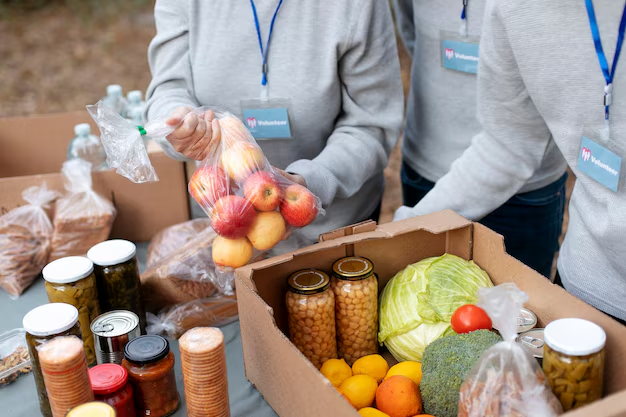

Boas-vindas
Contador: {{ contador }}
Campanha de Doações
Total de doações simuladas: R$ {{ doacoes }}
Necessidades Prioritárias
- prioridade {{ item.prioridade }}
Site acessível, responsivo e instalável (PWA).
Contador: {{ contador }}
Total de doações simuladas: R$ {{ doacoes }}